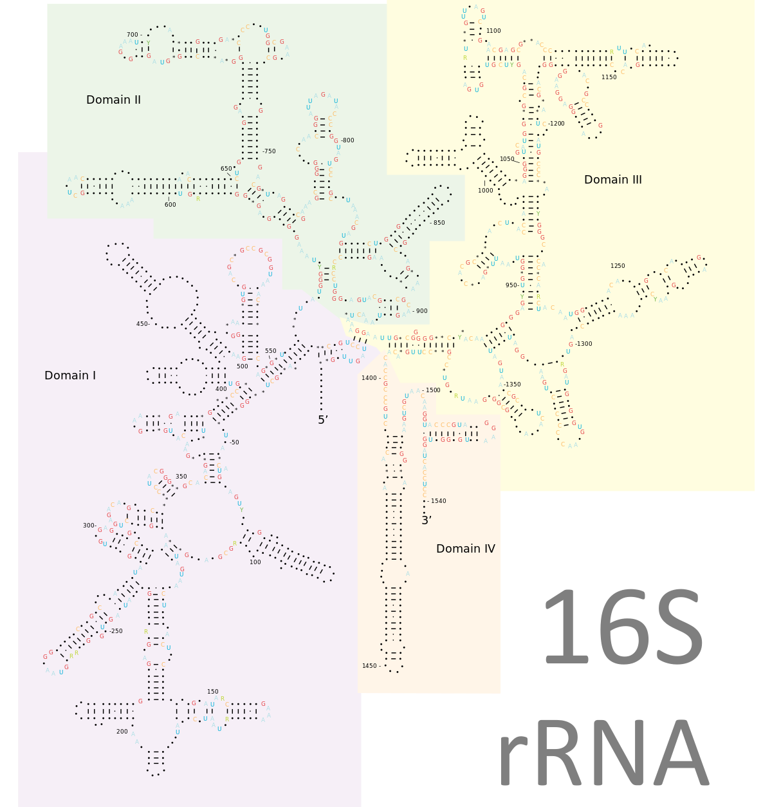

Project overview
We present a novel method of marker analysis of microbial data: clustering analysis of microbial communities using multiple genomic markers. This is the calibration of markers using data from known microbial genomes.
Important Links
-
Links to the GitHub repository: MetAmp analysis tool
-
Documentation: UserGuide.pdf
Contact
-
Ilya Y. Zhbannikov, ilyaz@uidaho.edu
-
James A. Foster, foster@uidaho.edu